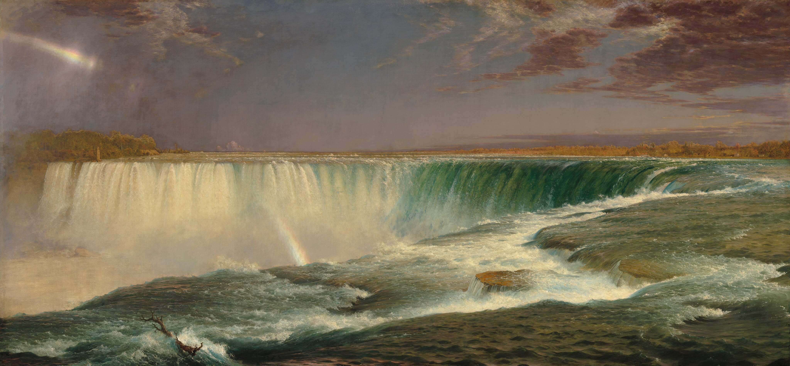

Niagara's tremendous success both in the United States and abroad established Frederic Edwin Church's reputation as the most famous American painter of his time. Similarly, the acquisition of Niagara by the young Corcoran Gallery of Art in 1876 secured the institution's reputation and inspired other major artists to seek representation in the collection.In the 19th century, many American artists attempted to capture the power and beauty of Niagara Falls. Widely considered the nation's greatest natural wonder as well as a symbol of its youthful vigor and promise, the site was also deemed far superior to any natural phenomenon in Europe. Church's majestic 1857 canvas reveals the vista from the Canadian shore, based on oil and pencil sketches he had made during several visits to the site in 1856. He was the first to render the spectacle on such a grand scale, with such fine detail, naturalism, and immediacy. He heightened the illusion of reality by selecting a non-traditional format of canvas with a width twice as wide as its height to convey the panoramic expanse of the scene.
